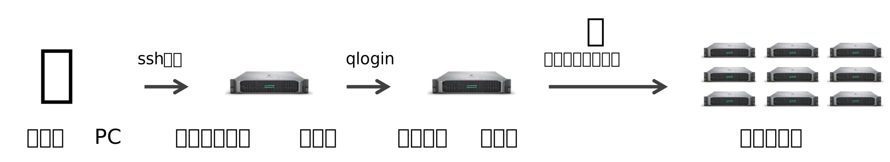
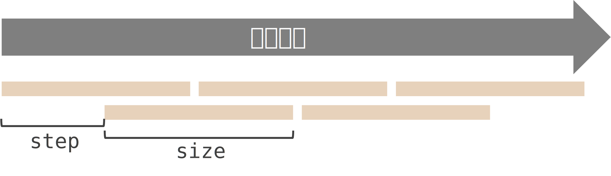

新村グループ プロトコル共有 & Fst 解析ハンズオン
遺伝研ジョブスクリプトについて
プロトコルをざっくり説明:
g1_quality_control.shg2_read_mapping.shg3_snp_calling.shg4_merge.shg5_ld_prune.shg6_pca.shg7_fst.shプロトコル: 農工大ラボ/行動グループ/実験プロトコール/全ゲノム解析/
\(F_\text{st}\) 解析ハンズオン
大量のデータを扱い、 大規模なメモリ・計算能力を要する解析は手持ちの PC では困難
複数の高性能な計算機 (スパコン) に適切にリソースを割り振って、 効率的に解析を進める。
「なんの解析を、どういうリソースでやるか」を書いてコンピュータに渡す。 (ジョブスクリプト)
書き方はいろいろ。 今日は遺伝研スパコンの場合。
ゲートウェイノード (共通) へ ssh 接続
! 全ユーザが共有する場所なので、ここで作業をしない。
ログインノード (個別) へ移動
ジョブスクリプト (.sh) を書いてジョブを投入 (qsub)

.sh) (Python でも書ける。)まず Bash の記法について説明した後、 AGE 特有の書き方について説明します。
|、リダイレクト >
#$)
sample.sh
遺伝研スパコン上で実行してみる:
>>> だと上書き、2個 >> だと追加
例:
||例:
aliasalias例:
sample.sh
#!/bin/bash
#$ -S /bin/bash # インタープリタの指定
#$ -cwd # ジョブを実行する場所をカレントディレクトリに
#$ -V # ジョブ実行時の環境変数をすべてジョブに受け継ぐ
#$ -l short # 計算機の種類の指定 (short, intel, gpu, epyc, medium)
#$ -l d_rt=00:10:00 # 実行上限時間の指定
#$ -l s_rt=00:10:00 # 同じ
#$ -l s_vmem=4G # メモリ量の指定
#$ -l mem_req=4G # 同じ
#$ -o stdout.txt # 標準出力のファイル名
#$ -e stderr.txt # エラー出力のファイル名
echo Hello使い方:
/usr/local/biotools/a-z/ から使いたいツールのバージョンを探す。apptainer exec + バージョンまでのPATH + コマンドsamtools の場合:
https://sc.ddbj.nig.ac.jp/software/grid_engine/array_jobs
同じ解析を4サンプルに対して同時に実行する例:
-t 1-4$SEG_TASK_ID を指定。1,2,3,4 を指定している。
3-11:2 (3から11まで1つ飛ばしで) みたいな指定も可能
$SGE_TASK_ID-tcqquota コマンドで1ユーザが使えるノードの数を確認できる。
g1_quality_control.shg2_read_mapping.shg3_snp_calling.shg4_merge.shg5_ld_prune.shg6_pca.shg7_fst.shプロトコル置き場: 農工大ラボ/行動グループ/実験プロトコール/全ゲノム解析/
vcf-query-lgrep にパイプしてほしいサンプルのみ抽出| grep -E 'SM|YKD' > shamo.txt でシャモを抽出
| grep -v -E 'SM|YKD' > non-shamo.txt でシャモ以外を抽出
vcftoolsvcftools --gzvcf file.vcf.gz --weir-fst-pop pop1.txt --weir-fst-pop pop2.txt \
--fst-window-size 10000 --fst-window-step 5000 --out outfile--gzvcf--weir-fst-pop--fst-window-size, --fst-window-step
--out.log と .windowed.weir.fst の2ファイル)